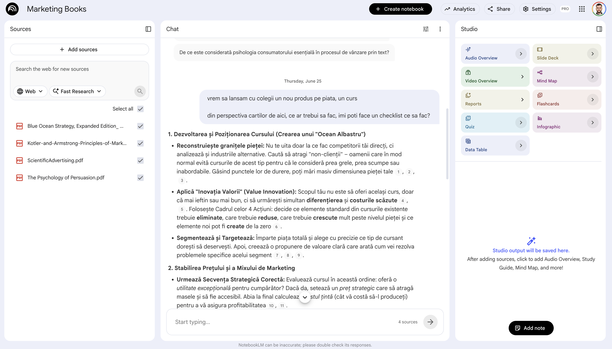
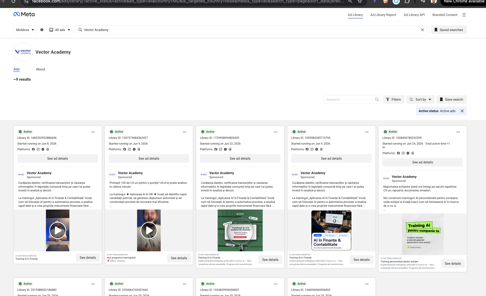
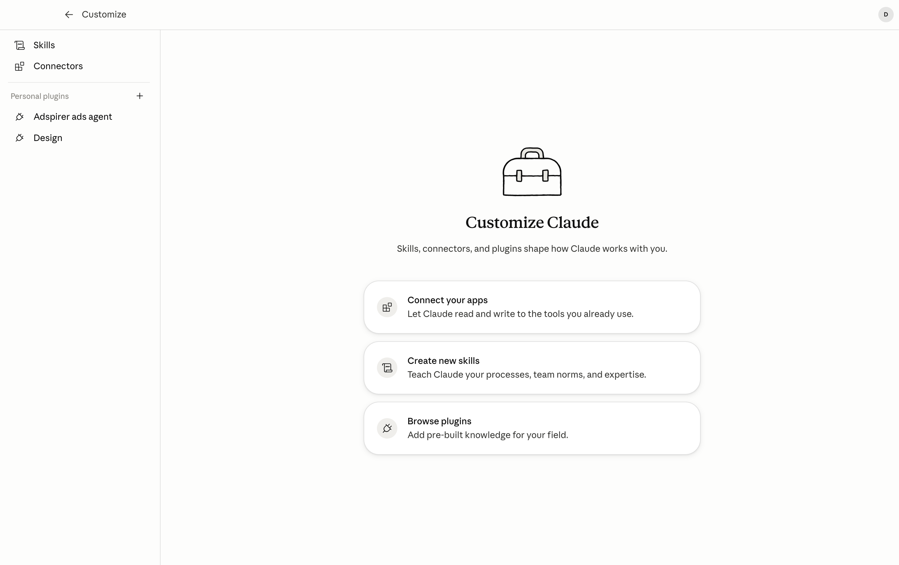

AI Aplicat în Marketing:
De la Idee la Campanie
Azi generăm conținut, construim landing pages și automatizăm taskuri repetitive — pe brandurile voastre reale


NotebookLM — AI care știe sursele tale




 Claude — ce e și ce poate
Claude — ce e și ce poate
Claude + Sheets/Excel
Citește datele de campanie: ROAS, CTR, cost/lead — analiză fără formule.
Cowork — execuție autonomă
Îi dai un task de marketing și-l duce singur la capăt, mai mulți pași.
Skills — documente reale
Generează brief-uri, calendare, rapoarte în .docx / .xlsx — nu text în browser.
MCP & conectori
Drive, Gmail, Chrome, Meta Ads — acționează în uneltele tale.
Copy lung & ton
Articole, newslettere, pagini de vânzare — ton de brand consistent.
Projects
Un dosar permanent cu contextul de brand — îl setezi o dată.
Agenți de marketing
Îi dai un obiectiv, nu o comandă — duce taskul cap-coadă. Mai târziu azi.
 — facebook.com/ads/library: vezi toate reclamele active ale oricărui brand (concurență sau ale tale).
— facebook.com/ads/library: vezi toate reclamele active ale oricărui brand (concurență sau ale tale).
Cu Claude Code — din GitHub
Îl tragi direct din repo: /plugin marketplace add → /plugin install. Apare instant.
Manual — descarci .md-ul
Descarci SKILL.md (sau ZIP) și-l pui în folderul ~/.claude/skills/. Gata.

 Drive
Drive SheetsMeta Ads
SheetsMeta Ads TrelloDriveia brief-ulSheetscitește cifreleMeta Adstrage performanța
TrelloDriveia brief-ulSheetscitește cifreleMeta Adstrage performanțaClaude + Google — Drive & Gmail

Meta Ads — performanțăTrello — campaniiSheets — bugetRaport de marketing
ce a mers, ce nu, recomandări — gata de prezentat
 Claude + MCP · Reclame plătite
Claude + MCP · Reclame plătiteReclame plătite — Claude unește Meta, Canva și MailerLite

terminat
 Articol pe blog (WordPress)
Articol pe blog (WordPress) Postare pe InstagramImagine în Canva
Postare pe InstagramImagine în Canva
GitHub
depozitul public de proiecte (repos)
Ca un magazin de aplicații, dar pentru cod: oameni publică acolo proiecte gata făcute — inclusiv agenți — pe care le poți lua și folosi.
echipa / agent-campanii